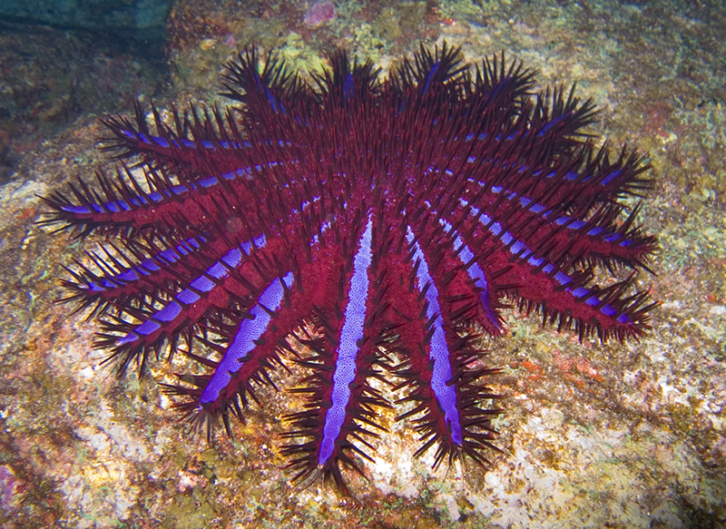

Productions
Le travail de l'équipe
Films, jeu, affiches



L'Acanthaster planci — l'étoile de mer couronne d'épines — dévaste silencieusement nos océans. Un individu peut détruire jusqu'à 6 m² de coraux par an.

Un outil de détection des larves d'Acanthaster, afin de prévenir la prolifération avant qu'elle atteigne un stade de non-retour.
En développementUn « aimant » qui attire les étoiles de mer en un point permettant de les pêcher en une fois, évitant d'aller les chercher une à une.
ConceptSavez-vous vraiment ce qui menace nos récifs coralliens ?